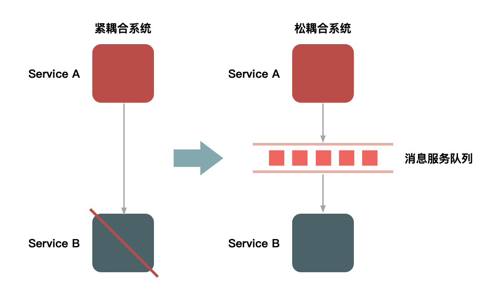
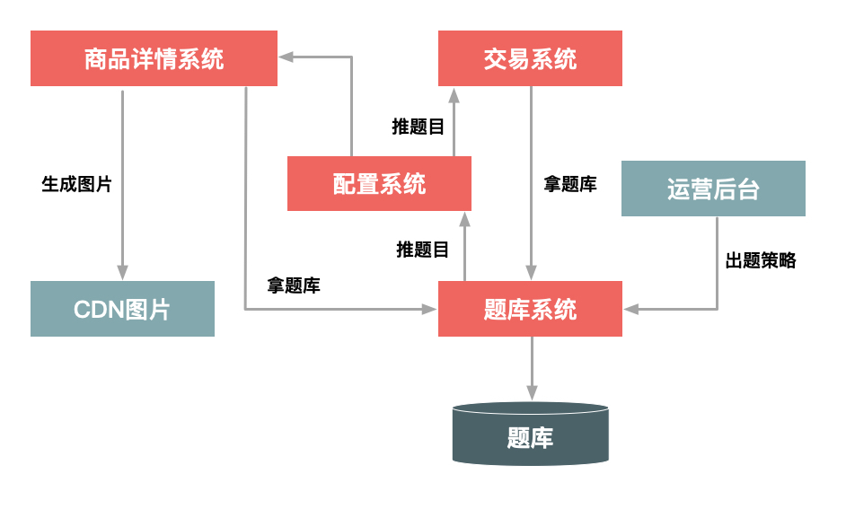
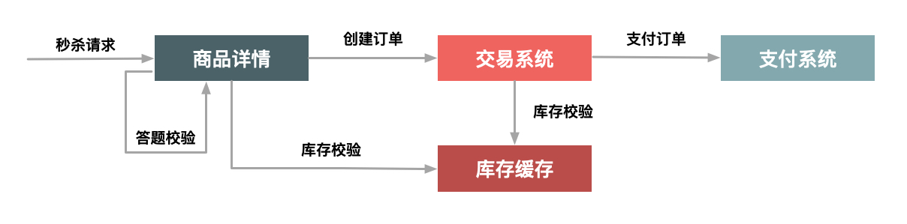
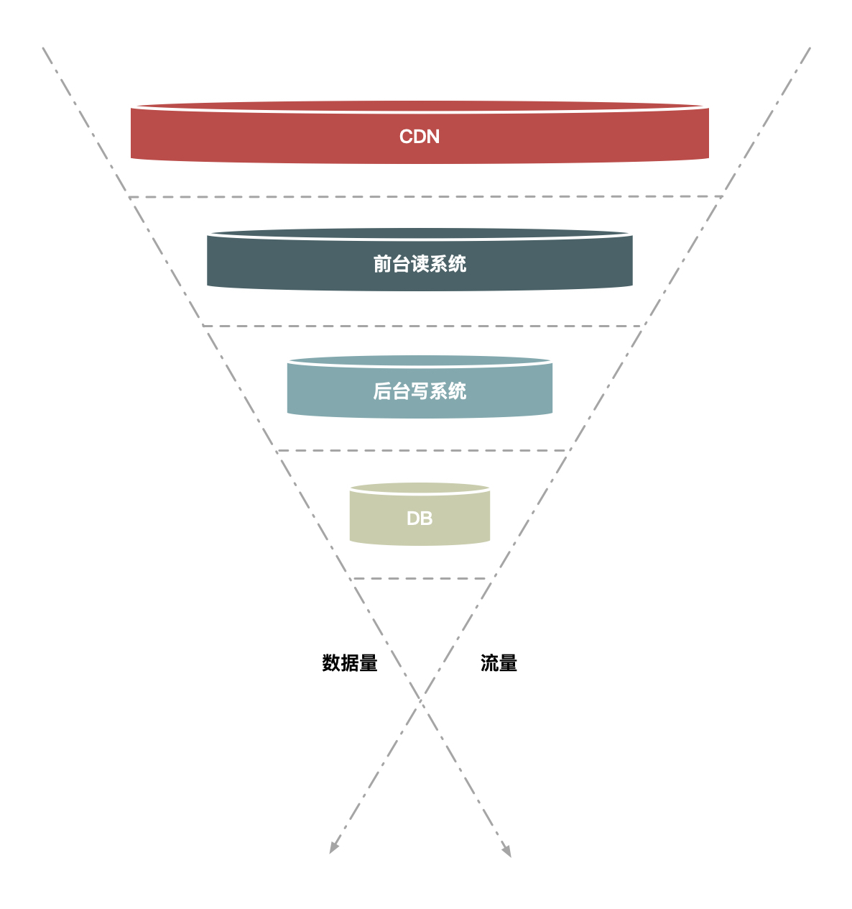

04 流量削峰这事应该怎么做？
如果你看过秒杀系统的流量监控图的话，你会发现它是一条直线，就在秒杀开始那一秒是一条很直很直的线，这是因为秒杀请求在时间上高度集中于某一特定的时间点。这样一来，就会导致一个特别高的流量峰值，它对资源的消耗是瞬时的。
但是对秒杀这个场景来说，最终能够抢到商品的人数是固定的，也就是说100人和10000人发起请求的结果都是一样的，并发度越高，无效请求也越多。
但是从业务上来说，秒杀活动是希望更多的人来参与的，也就是开始之前希望有更多的人来刷页面，但是真正开始下单时，秒杀请求并不是越多越好。因此我们可以设计一些规则，让并发的请求更多地延缓，而且我们甚至可以过滤掉一些无效请求。
为什么要削峰
为什么要削峰呢？或者说峰值会带来哪些坏处？
我们知道服务器的处理资源是恒定的，你用或者不用它的处理能力都是一样的，所以出现峰值的话，很容易导致忙到处理不过来，闲的时候却又没有什么要处理。但是由于要保证服务质量，我们的很多处理资源只能按照忙的时候来预估，而这会导致资源的一个浪费。
这就好比因为存在早高峰和晚高峰的问题，所以有了错峰限行的解决方案。削峰的存在，一是可以让服务端处理变得更加平稳，二是可以节省服务器的资源成本。针对秒杀这一场景，削峰从本质上来说就是更多地延缓用户请求的发出，以便减少和过滤掉一些无效请求，它遵从“请求数要尽量少”的原则。
今天，我就来介绍一下流量削峰的一些操作思路：排队、答题、分层过滤。这几种方式都是无损（即不会损失用户的发出请求）的实现方案，当然还有些有损的实现方案，包括我们后面要介绍的关于稳定性的一些办法，比如限流和机器负载保护等一些强制措施也能达到削峰保护的目的，当然这都是不得已的一些措施，因此就不归类到这里了。
排队
要对流量进行削峰，最容易想到的解决方案就是用消息队列来缓冲瞬时流量，把同步的直接调用转换成异步的间接推送，中间通过一个队列在一端承接瞬时的流量洪峰，在另一端平滑地将消息推送出去。在这里，消息队列就像“水库”一样， 拦蓄上游的洪水，削减进入下游河道的洪峰流量，从而达到减免洪水灾害的目的。
用消息队列来缓冲瞬时流量的方案，如下图所示：

图1 用消息队列来缓冲瞬时流量
但是，如果流量峰值持续一段时间达到了消息队列的处理上限，例如本机的消息积压达到了存储空间的上限，消息队列同样也会被压垮，这样虽然保护了下游的系统，但是和直接把请求丢弃也没多大的区别。就像遇到洪水爆发时，即使是有水库恐怕也无济于事。
除了消息队列，类似的排队方式还有很多，例如：
- 利用线程池加锁等待也是一种常用的排队方式；
- 先进先出、先进后出等常用的内存排队算法的实现方式；
- 把请求序列化到文件中，然后再顺序地读文件（例如基于MySQL binlog的同步机制）来恢复请求等方式。
可以看到，这些方式都有一个共同特征，就是把“一步的操作”变成“两步的操作”，其中增加的一步操作用来起到缓冲的作用。
说到这里你可能会说，这样一来增加了访问请求的路径啊，并不符合我们介绍的“4要1不要”原则。没错，的确看起来不太合理，但是如果不增加一个缓冲步骤，那么在一些场景下系统很可能会直接崩溃，所以最终还是需要你做出妥协和平衡。
答题
你是否还记得，最早期的秒杀只是纯粹地刷新页面和点击购买按钮，它是后来才增加了答题功能的。那么，为什么要增加答题功能呢？
这主要是为了增加购买的复杂度，从而达到两个目的。
第一个目的是防止部分买家使用秒杀器在参加秒杀时作弊。2011年秒杀非常火的时候，秒杀器也比较猖獗，因而没有达到全民参与和营销的目的，所以系统增加了答题来限制秒杀器。增加答题后，下单的时间基本控制在2s后，秒杀器的下单比例也大大下降。答题页面如下图所示。
图2 答题页面
第二个目的其实就是延缓请求，起到对请求流量进行削峰的作用，从而让系统能够更好地支持瞬时的流量高峰。这个重要的功能就是把峰值的下单请求拉长，从以前的1s之内延长到2s~10s。这样一来，请求峰值基于时间分片了。这个时间的分片对服务端处理并发非常重要，会大大减轻压力。而且，由于请求具有先后顺序，靠后的请求到来时自然也就没有库存了，因此根本到不了最后的下单步骤，所以真正的并发写就非常有限了。这种设计思路目前用得非常普遍，如当年支付宝的“咻一咻”、微信的“摇一摇”都是类似的方式。
这里，我重点说一下秒杀答题的设计思路。

图3 秒杀答题
如上图所示，整个秒杀答题的逻辑主要分为3部分。
- 题库生成模块，这个部分主要就是生成一个个问题和答案，其实题目和答案本身并不需要很复杂，重要的是能够防止由机器来算出结果，即防止秒杀器来答题。
- 题库的推送模块，用于在秒杀答题前，把题目提前推送给详情系统和交易系统。题库的推送主要是为了保证每次用户请求的题目是唯一的，目的也是防止答题作弊。
- 题目的图片生成模块，用于把题目生成为图片格式，并且在图片里增加一些干扰因素。这也同样是为防止机器直接来答题，它要求只有人才能理解题目本身的含义。这里还要注意一点，由于答题时网络比较拥挤，我们应该把题目的图片提前推送到CDN上并且要进行预热，不然的话当用户真正请求题目时，图片可能加载比较慢，从而影响答题的体验。
其实真正答题的逻辑比较简单，很好理解：当用户提交的答案和题目对应的答案做比较，如果通过了就继续进行下一步的下单逻辑，否则就失败。我们可以把问题和答案用下面这样的key来进行MD5加密：
- 问题key：userId+itemId+question_Id+time+PK
- 答案key：userId+itemId+answer+PK
验证的逻辑如下图所示：

图4 答题的验证逻辑
注意，这里面的验证逻辑，除了验证问题的答案以外，还包括用户本身身份的验证，例如是否已经登录、用户的Cookie是否完整、用户是否重复频繁提交等。
除了做正确性验证，我们还可以对提交答案的时间做些限制，例如从开始答题到接受答案要超过1s，因为小于1s是人为操作的可能性很小，这样也能防止机器答题的情况。
分层过滤
前面介绍的排队和答题要么是少发请求，要么对发出来的请求进行缓冲，而针对秒杀场景还有一种方法，就是对请求进行分层过滤，从而过滤掉一些无效的请求。分层过滤其实就是采用“漏斗”式设计来处理请求的，如下图所示。

图5 分层过滤
假如请求分别经过CDN、前台读系统（如商品详情系统）、后台系统（如交易系统）和数据库这几层，那么：
- 大部分数据和流量在用户浏览器或者CDN上获取，这一层可以拦截大部分数据的读取；
- 经过第二层（即前台系统）时数据（包括强一致性的数据）尽量得走Cache，过滤一些无效的请求；
- 再到第三层后台系统，主要做数据的二次检验，对系统做好保护和限流，这样数据量和请求就进一步减少；
- 最后在数据层完成数据的强一致性校验。
这样就像漏斗一样，尽量把数据量和请求量一层一层地过滤和减少了。
分层过滤的核心思想是：在不同的层次尽可能地过滤掉无效请求，让“漏斗”最末端的才是有效请求。而要达到这种效果，我们就必须对数据做分层的校验。
分层校验的基本原则是：
- 将动态请求的读数据缓存（Cache）在Web端，过滤掉无效的数据读；
- 对读数据不做强一致性校验，减少因为一致性校验产生瓶颈的问题；
- 对写数据进行基于时间的合理分片，过滤掉过期的失效请求；
- 对写请求做限流保护，将超出系统承载能力的请求过滤掉；
- 对写数据进行强一致性校验，只保留最后有效的数据。
分层校验的目的是：在读系统中，尽量减少由于一致性校验带来的系统瓶颈，但是尽量将不影响性能的检查条件提前，如用户是否具有秒杀资格、商品状态是否正常、用户答题是否正确、秒杀是否已经结束、是否非法请求、营销等价物是否充足等；在写数据系统中，主要对写的数据（如“库存”）做一致性检查，最后在数据库层保证数据的最终准确性（如“库存”不能减为负数）。
总结一下
今天，我介绍了如何在网站面临大流量冲击时进行请求的削峰，并主要介绍了削峰的3种处理方式：一个是通过队列来缓冲请求，即控制请求的发出；一个是通过答题来延长请求发出的时间，在请求发出后承接请求时进行控制，最后再对不符合条件的请求进行过滤；最后一种是对请求进行分层过滤。
其中，队列缓冲方式更加通用，它适用于内部上下游系统之间调用请求不平缓的场景，由于内部系统的服务质量要求不能随意丢弃请求，所以使用消息队列能起到很好的削峰和缓冲作用。
而答题更适用于秒杀或者营销活动等应用场景，在请求发起端就控制发起请求的速度，因为越到后面无效请求也会越多，所以配合后面介绍的分层拦截的方式，可以更进一步减少无效请求对系统资源的消耗。
分层过滤非常适合交易性的写请求，比如减库存或者拼车这种场景，在读的时候需要知道还有没有库存或者是否还有剩余空座位。但是由于库存和座位又是不停变化的，所以读的数据是否一定要非常准确呢？其实不一定，你可以放一些请求过去，然后在真正减的时候再做强一致性保证，这样既过滤一些请求又解决了强一致性读的瓶颈。
不过，在削峰的处理方式上除了采用技术手段，其实还可以采用业务手段来达到一定效果，例如在零点开启大促的时候由于流量太大导致支付系统阻塞，这个时候可以采用发放优惠券、发起抽奖活动等方式，将一部分流量分散到其他地方，这样也能起到缓冲流量的作用。
最后，欢迎你在留言区和我交流，你也可以说说在实际工作中，还有哪些对流量进行削峰的不同思路或方案，非常期待。
© 2019 - 2023 Liangliang Lee. Powered by gin and hexo-theme-book.